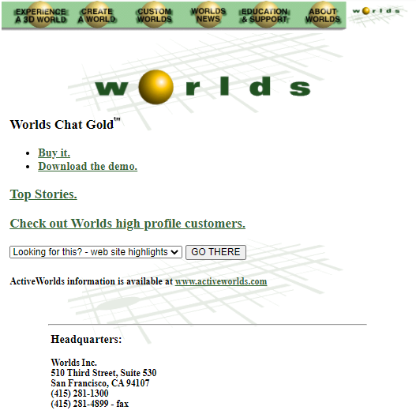

A continuación, se muestran las diferentes webs principales que tuvo Worlds a lo largo de su existencia:
Esta es la primera web conocida de Worlds
Casi igual a la primera, solo que hubo algunas modificaciones en el contenido
Actualmente, los archivos de esta web estan corruptos, ya que no se encuentran al dia de hoy en los servidores de Worlds
Como la web anterior, actualmente se encuentra corrupta por falta de archivos locales.
Después de 1 año, la web principal de Worlds es cambiada completamente por un nuevo diseño
Después de 6 años de casi inactividad, la web principal de Worlds es cambiada por otro nuevo diseño
Llegamos a la ultimo cambio de la web principal, que hasta el dia de hoy sigue estando